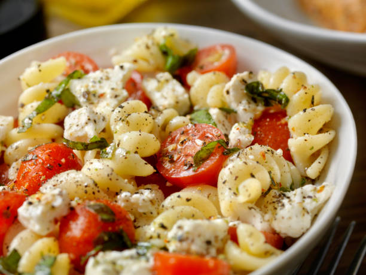

Pasta Salad
Submitted by: Irlandes
This pasta salad with pepperoni, tomatoes, and provolone cheese is the best I've ever eaten, and people request it frequently. It's a very easy, light-tasting side dish for a picnic or dinner.

| Prep Time |
Cook Time |
Total Time |
Servings |
30 mins |
15 mins |
45 mins |
16 |
Ingredients
- 1 package fusili pasta
- 3 cups cherry tomatoes
- 1/2 pound provolone cheese, cubed
- 1/2 pound salami, cubed
- 1/4 pound sliced pepperoni, cut in half
- 1 large green bell pepper, cut into 1 inch pieces
- 1 can black olives, drained
- 1 jar pimentos, drained
- 1 bottle italian salad dressing
Directions
- Gather all ingredients
- Bring a large pot of lightly salted water to a boil. Cook fusilli pasta in the boiling water, stirring occasionally, until tender yet firm to the bite, about 12 minutes. Drain.
- Combine pasta with tomatoes, cheese, salami, pepperoni, green pepper, olives, and pimentos in a large bowl. Pour in salad dressing; toss to coat.
- Enjoy!
Source: Allrecipes
Homepage